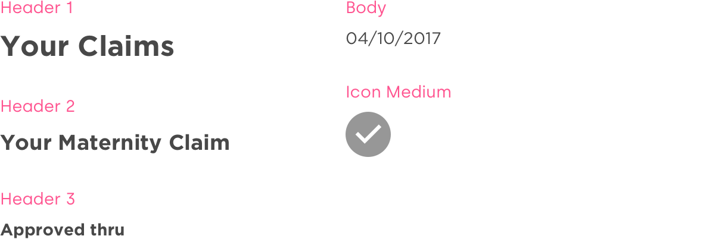
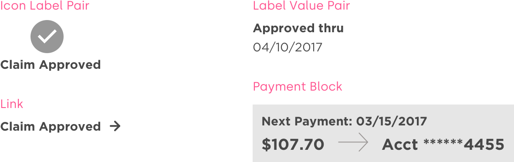
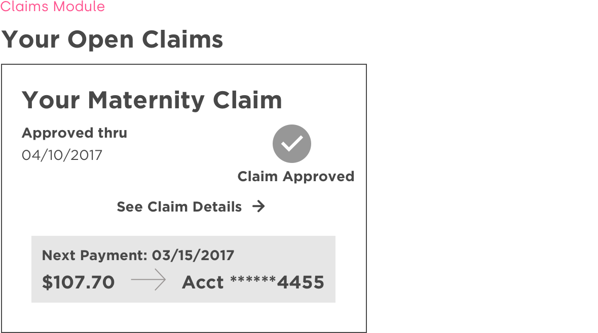

Opportunity
As part of a company-wide rebranding effort, The Hartford was looking to build a new, responsive group benefits website by using a clear and intuitive design system.
Roles
Experience Design Lead
Project Manager
Prototyper
Tools
Sketch
Invision
Craft
Schedule
2 month exploration phase
7 sprints
3 week sprints
Exploration Phase
We relied on three key insights from a leading service design agency in order to guide our work.
1
Clearly show the status of a claim
2
Clearly show the next steps in the process
3
Clearly show next payment information
We determined 8 common use pages that could drive at the key insights while also covering a diverse cross section of design components and patterns. With these pages in mind, we built out medium fidelity wireframes as our design foundation.
Design System
Atomic Design
We began dissecting our 8 common use pages to build out a foundation for our design system based on atomic design principles. Later analysis showed that through just 8 screens we covered roughly 90% of atoms, 50% of molecules and 20% of organisms with just our 10 common use pages.
Atoms
Molecules
Organisms
Design System
Visual Design
The visual design team then took our medium-fidelity components from the 8 common use pages and applied a branded look and feel. From these pages they created our visual language for the system.
Atoms

Molecules

Organisms
Project Management
Sprint Schedule
We worked very closely with both product and development teams to make sure we met business goals and designed technically-feasible designs
We adopted the following schedule to "sprint ahead" of development and testing.
Project Management
Sprint Activies
Within each three week sprint, we completed the following activities to make sure that we were working closely with each team and delivering on time.
Week 1 Planning
Review pages and features with Product and Process leads
Assign work to designers
Review previous designs and identify any potential overlap in functionality or patterns
Begin mobile design
Week 2 Feedback
Validate that mobile designs meet Product expectations
Identify reused patterns with Development team
Validate all data in designs is feasible with Services team
Receive sign off from all groups
(If design is net new) complete a round of usability testing
Week 3 Delivery
Deliver final mobile designs
Add mobile designs into sitewide InVision prototype for consumption by other teams
Create and deliver the tablet and desktop designs
Final Result
Over time, we reused and extended the design system from its foundation to cover the ~120 pages in the final application. Our design team met all our goals by creating a modern and extensible atomic design system that will be the future building blocks for group benefits applications at our insurance client.